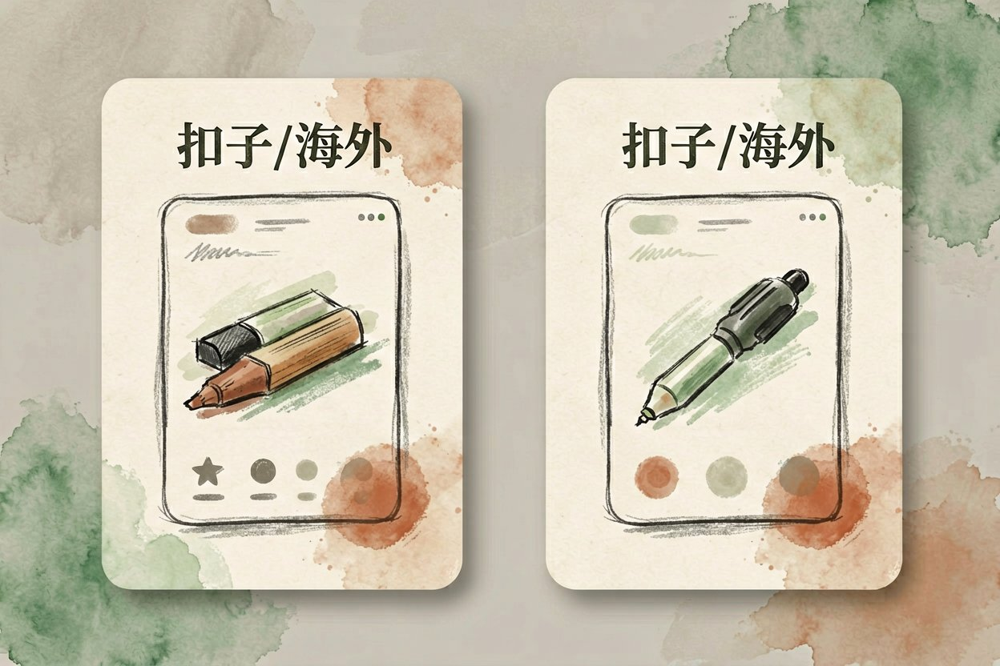
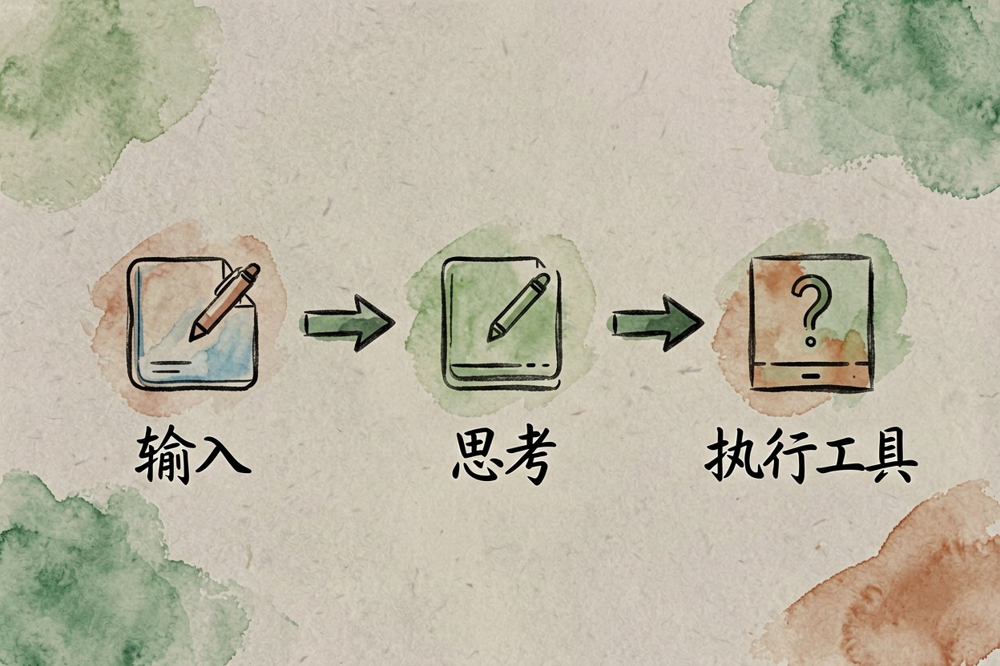

AI 智能体搭建：零代码用扣子做第一个工作流助手
重复活儿想甩手？现在不用写代码，把模块拖一拖连一连，就能拼出一个会自己干活的 AI 小助手。
AI 智能体搭建是本文的核心主题，下面详细介绍如何使用。
AI 智能体搭建是什么：让模型自己跑流程

AI 智能体搭建，是把一个会思考的模型接上工具和步骤，让它自己拆任务、调接口、出结果。普通聊天机器人你问一句它答一句，智能体会自己连着干完一串事。和AI 智能体是什么讲的是同一件事，这里侧重怎么动手做。先把第一个助手跑起来，比一次追求完美更重要。
对普通人最有用的点：不用写代码。平台把流程做成模块，你拖一拖、连一连、改改文字就能成型。会提需求，基本就等于会搭建。它的价值不在多聪明，而在把重复动作固化下来，你只管看结果。
选平台：零代码从扣子起步

国内新手直接选扣子（Coze），全中文、模板多、不用科学上网。注册后随便跑一个公开模板，先感受一下「输入到输出」长啥样。别一上来就追求复杂，先跑通一个最小例子，建立手感最重要。
海外还有 Dify、n8n 这类，功能更强但要部署。零基础阶段，扣子够用，等真有需求再换。熟悉一个平台后再看别的，迁移成本很低。和免费智能体平台清单对照着挑，别贪多。每个平台逻辑相通，换平台成本不高，先用熟一个。
三步搭出第一个助手
任何智能体都只有三块：用户输入、思考推理、执行工具。先写角色，再写它能调的工具，最后定输出格式。一个会议纪要助手这样描述就清楚了：
智能体设定示例：
角色：会议纪要助手
输入：会议录音转写文本
步骤：提取待办、列出责任人、生成摘要
输出：清单 + 200 字总结保存后发一段测试文本，看它有没有抓对待办。不对就调角色和步骤，别改底层代码。先拿一段真实会议记录试，比凭空编例子更能暴露问题。跑顺了再加第二个工具，逐步加复杂度。
补充：AI 智能体搭建的详细用法可参考上文步骤。
补充：AI 智能体搭建的详细用法可参考上文步骤。
补充：AI 智能体搭建的详细用法可参考上文步骤。
用知识库喂进你的资料
知识库是普通人最强的一招。上传你的手册、合同、课程笔记，智能体就变成你的行业专家。不用训练模型，上传等于教会它。资料越聚焦，回答越准，杂七杂八一起传反而稀释重点。
先传三五份最相关的文档，问个具体问题验证它有没有用到。和AI 会议纪要工具配合，把会议沉淀进知识库，下次直接问。知识库更新后记得重新触发索引，旧文档改了要重传，不然模型还在用旧版。
关于AI 智能体搭建，建议结合实操理解，多看多试。
---
调效果与上线注意
A: 掌握 AI 智能体搭建 的关键在于多实践，建议先跑通基础流程再逐步深入。
Q: AI 智能体搭建 免费吗？ A: 大多数工具提供基础免费额度，具体以官网当前说明为准。
AI 智能体搭建的最佳实践见上文详细步骤，别错过核心要点。
本文信息核对于 2026-08-24。AI 产品的价格、免费额度与功能变动频繁，实际以各工具官网当前说明为准。